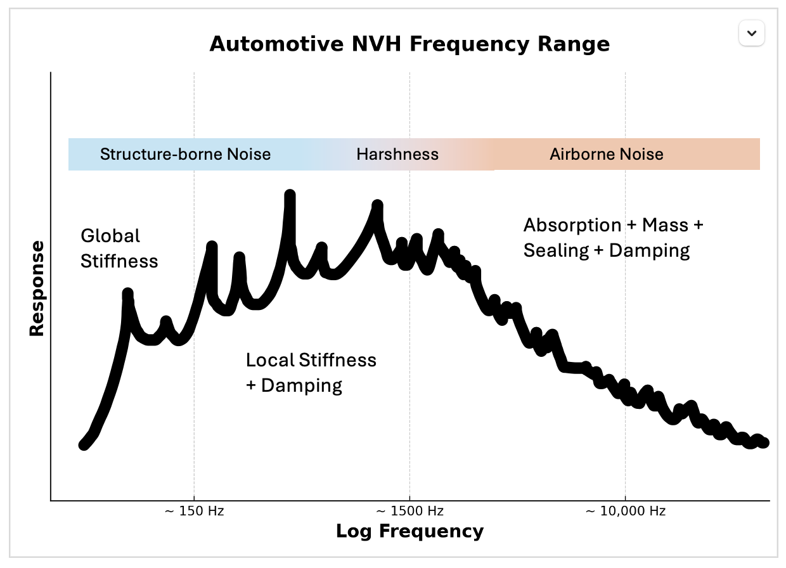
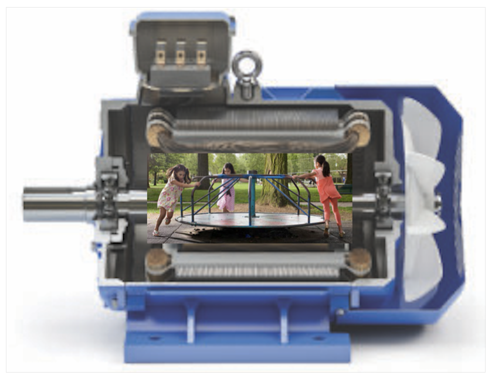
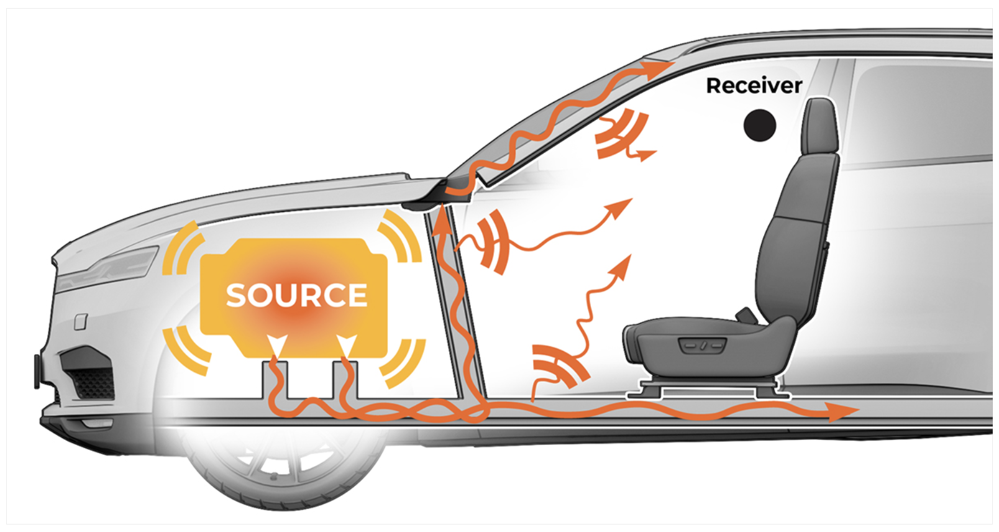

Silencing the Mechanical Symphony: The Art of Vibration Control
Next time you sit in an electric vehicle, listen closely. What you’ll hear as the vehicle accelerates is a faint whine, like a spaceship or maybe a dentist drill spooling up. That’s the sound of gears meshing, motors spinning at hundreds of revolutions per second, and vibrations finding their way into the cabin. For the past three years, I’ve worked on designing isolation systems that stop that prevents this noise from reaching your ears. In this piece, I’ll take you behind the scenes of an unsung hero in every EV: the powertrain vibration isolation system. Things are about to get technical, but stick with me and you’ll never hear your EV in the same way again.
The Symphony of Noise: Motors, Gears, and Inverters
Picture a small mass being swung on a string, attached to a structure — starting slow at one revolution per second and speeding up all the way to 6,000 revolutions per second (6kHz). This is happening inside an electric vehicle’s powertrain, not at one spot, but dozens. It’s the key to understanding why your “silent” EV hums, buzzes, and whines.
Low frequencies (0-1000Hz): At the lower end from 1 to 1000Hz, the structure would vibrate — inaudible but if you were to touch it you would feel a steady tremble similar to a phone buzzing in your pocket. This is the vibration only range, which transfer through anything rigidly attached to the structure.
Mid frequencies (1000-2000Hz): Speed up the rotation of the mass, and the structure would start to behave differently. You’d feel the structural vibrations, but begin to hear a faint buzzing signifying the harshness range, where the acoustic radiation of the attached structure coincides with the structural vibrations.
High frequencies (2000-6000+Hz): Continuing past 2000Hz, the structure would start to sing — a piercing tone like a sci-fi laser. This signifies the airborne regime, where vibrational energy leaves the structure in the form of sound radiating off of the structures’ surface area, propagating in all directions normal to the surface.
The shift — from vibrations you feel to sounds you hear — boils down to the physics of structural dynamics and structural acoustics. In the automotive world, we refer to these somewhat discrete regimes as NVH - noise, vibration, and harshness — and we have separate engineering systems for controlling them. Inside an EV powertrain, there are vibration and noise generating excitations at every dynamic interface from the gears to the bearings to the motors to the power electronics, and it’s my job to keep them from being perceived by you.
From buzzing to whining: EV Powertrain Noise Breakdown
Let’s break down the main culprits creating noise and vibration that sneak into the cabin: the motor, the gears, and the inverter. They span over different harmonics (think different constants multiplied by the wheel rotation speed) which function to excite every structural mode that exists in the structure.
-
The Motor’s Low Hum (0-1000Hz)
Electric motors - whether permanent magnet or induction - generate torque via a rotor following dense magnetic fields. Picture a merry-go-round at a playground, with kids pushing and pulling it up to 1000 times per second. That’s what’s happening inside the motor: copper wires wrapped tightly around the stator’s teeth create magnetic forces that push/pull on the rotor. These magnetic forces drive the car — in the process sending a deep, structure-borne hum (0-1000Hz) into the drive unit and, if unchecked, straight into the cabin where you’d feel it as a steady hum.

Meanwhile, the rotor itself adds to the vibration symphony. Imagine a child jumping onto the edge of the spinning merry-go-round, this imbalance acts like an eccentric rotating mass, creating its own vibrations that match the rotor’s speed. Precise balancing techniques ensure the rotor spins with near perfect symmetry, minimizing these additional vibrations. Without this, the motor’s low hum would turn your seat into a vibrating massage chair. -
Gear Whine (0-10kHz)
In most electric vehicles, the motor doesn’t drive the wheels directly — the torque required would require a motor too large and costly. Instead, we use a gear reduction system that can amplify the torque of the motor by tenfold or greater while reducing its speed proportionately. Inside the geartrain, this torque amplification can happen in a single stage or several as it’s transferred across gear teeth that are as tall as a grain of rice — requiring exceptionally high tensile strength, hardness to resist wear, and fatigue resistance to prevent crack initiation.
When the teeth come into mesh under load, they deflect instantaneously before snapping back as they come out of mesh — these rapid deflections create vibrations and are the main culprit behind the of noise of an EV powertrain. Each gear mesh creates its own signature hum that corresponds to the number of teeth in the mesh and how fast they’re spinning, plus higher-pitched echoes at double or triple the base frequency. Multiple gear stages mean multiple hums overlapping. To reduce these vibrational sources, we add a helix angle that allows multiple teeth to mesh and share the load at once. This reduces deflection but puts extra strain on the bearings, forcing us to tradeoff gear whine against efficiency and bearing reliability. Each gear mesh sends out harmonic vibrations that shift with frequency — from a structure borne buzz you feel to an airborne whine reminiscent of a dentist’s drill. Each sound zone demands its own smart engineering fix to keep your EV cabin smooth and quiet. -
The Inverter’s High-Pitched Contribution (2-20kHz)
Positioned upstream in the powertrain energy flow is the inverter — the maestro orchestrating the motor’s rapidly switching current in the stator. The switching current creates strong magnetic fields that interact with the inverters internal components to induce low-amplitude high-frequency vibrations ranging from 2kHz to 20kHz. At this frequency — approaching the upper limit of human hearing (around 20kHz) — the vibrational energy leaves the structure primarily as airborne noise. The resulting vibrational energy dissipates as airborne noise directly leaves the structure’s surface, bypassing the vibration isolation system which necessitates the use of thick foam NVH covers that deaden the noise before it propagates into the cabin, as well as sealing between the chassis and the cabin. - Frequency-Dependent Structures: The active side (drive unit) and passive side (vehicle chassis/body) both exhibit frequency-dependent responses due to structural modes. Sweeping a constant-amplitude excitation across frequencies reveals peaks in measured vibrational or sound measurements in the cabin at these modes. Effective NVH design involves modeling these structural modes, and where overlaps or elevated responses occur, adjusting stiffness, mass, and damping properties can help optimize the frequency response.
- Variable Source Excitations: Motor and gear excitations vary in amplitude across their frequency bands. Modeling softwares specific to gear and motor NVH can help to inform the non-uniform NVH profile, making the peaks known to designers for further refinement.
- Isolator Dynamics: The isolator’s elastomeric properties introduce a frequency-dependent response caused by the resonance of the rubber legs. These peaks can be adjusted depending on the vehicle level response via durometer tuning or the inclusion of tuned rubber anti-resonance features. Preload can significantly alter this response, requiring the optimization to take place under realistic torque conditions.
Engineering Silence: Sources, Paths, and Isolators in EVs
We’ve identified the primary noise sources: the motor, gears, and the inverter. An NVH engineer’s saying — “1 gram of mass at the source is worth 100 grams at the receiver” — highlights the leverage of source-level mitigation. Optimizing gear microgeometry to reduce tooth deflection, adding mass to the gear’s themselves, or implementing control strategies to minimize stator deformation offer significant NVH reduction, though these adjustments all come with tradeoffs of gear durability, wear, bearing durability, as well as motor thermal and electrical performance. While there are inherent limits to source reduction, choosing the right bias towards tradeoffs can pay huge dividends when comparing to the mass and cost expenditure required on the isolator, active, or passive side to meet NVH target requirements at the vehicle level.
The transfer path is the noise’s journey to you — the propagation route of vibrations from the source to the receiver, manifesting as tactile feedback (e.g., steering wheel, seat, door panels) or airborne noise in the cabin. It is comprised of the active side (gears, motor, drive unit structure), and the passive side (chassis, body, leading to cabin). The isolator, an elastomeric component, reduces the transmission of vibrations acting as an energy barrier.
The isolator’s effectiveness can be quantified by the transmissibility ratio (TR), defined as:
TR = abs[(Y_receiver + Y_source)/(Y_isolator + Y_receiver + Y_source)]
Where Y represents mobility (velocity response per unit force), inversely related to dynamic stiffness. Effective isolation requires minimizing the isolator’s dynamic stiffness relative to the combined source and receiver stiffness across frequencies. This guides the design of drive unit bushings, which at a static level, react the drive unit’s torque, necessitating performance evaluation under a specific preload.Dynamically, the system becomes more complex:
Dynamic stiffness analysis of the active side, passive side, and isolator reveals frequency ranges where isolation is diminished, driven by the interplay between source, path, and isolator dynamics, which guides targeted NVH mitigation strategies.
Why It’s Tough: Masking, Variability, and Taste
Optimizing drive unit NVH in isolation would be complex but feasible with a mature design. However, in real-world conditions, vehicles experience concurrent noise and vibration from tires, wind, HVAC and suspension systems, which integrates drive unit NVH with overall vehicle NVH performance. These sources are referred to as “masking noise”, and start to obscure drive unit contributions at high speeds due to dominant aerodynamic noise or tire noise. At lower speeds, however, drive unit noise becomes perceptible, necessitating stricter NVH targets. A vehicle development cycle adds to complexity, as the source, transfer path, and isolator design maturities are evolving at the same time as the masking noise targets, requiring iteration loops and prototype vehicle measurements to draw baselines.In high-volume production, achieving NVH compliance for 3, 4, or 5 sigma of the population requires analysis of the statistical variance of sound profiles across torque and frequency ranges. Manufacturing tolerances in the gears, shafts, bearings and case dimensions can introduce shaft misalignment and tooth errors which cause measurable acoustic differences. These variations inform rejection criteria for defective drive units.
NVH evaluation is further complicated by the fact that subjectivity plays a role — some drivers perceive high-pitched drive unit sounds as desirable (e.g., spaceship-like), while others find them objectionable, driving the need for prototype testing and subjective evaluations. Pass/fail assessments under varied drive conditions guide iterative design refinements.
Conclusion: The Future of Quiet Rides
As electric vehicles claim a larger slice of the automotive market, it is inevitable that you’ll soon find yourself immersed in their acoustic environment — whether in a Robotaxi or in your own daily driver. The isolator remains the cornerstone of attenuating powertrain vibrations, but mastering NVH demands a system-level optimization. The next frontier lies in adaptive isolation systems, harnessing real-time NVH sensors and machine learning algorithms to dynamically suppress both structure and airborne vibrations across the 0-20kHz spectrum. This leap could cut isolation mass, delivering whisper-quiet cabins without sacrificing efficiency.Next time you find yourself in an electric vehicle, tune into that subtle whine of the powertrain. Reflect on the physics and ingenuity silencing it and share your NVH observations. What quirks have you noticed? Your insights could shape the next breakthrough — I’m all ears!